Soru 1Cevap: D
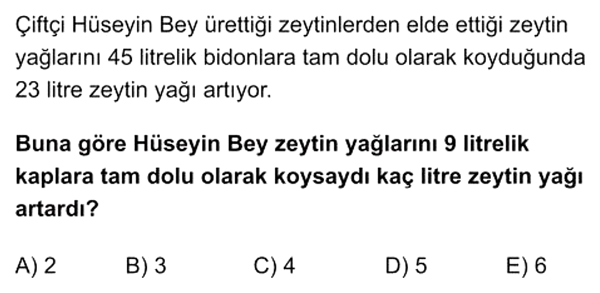
Çözüm
- Yağ miktarı 45'e bölününce 23 kalır: $45k+23$.
- $45k$ 9'un katı; $23=9\cdot2+5$.
- 9 litrelik kaplarda 5 litre artar → D.
Cevap: D
Soru 2Cevap: C
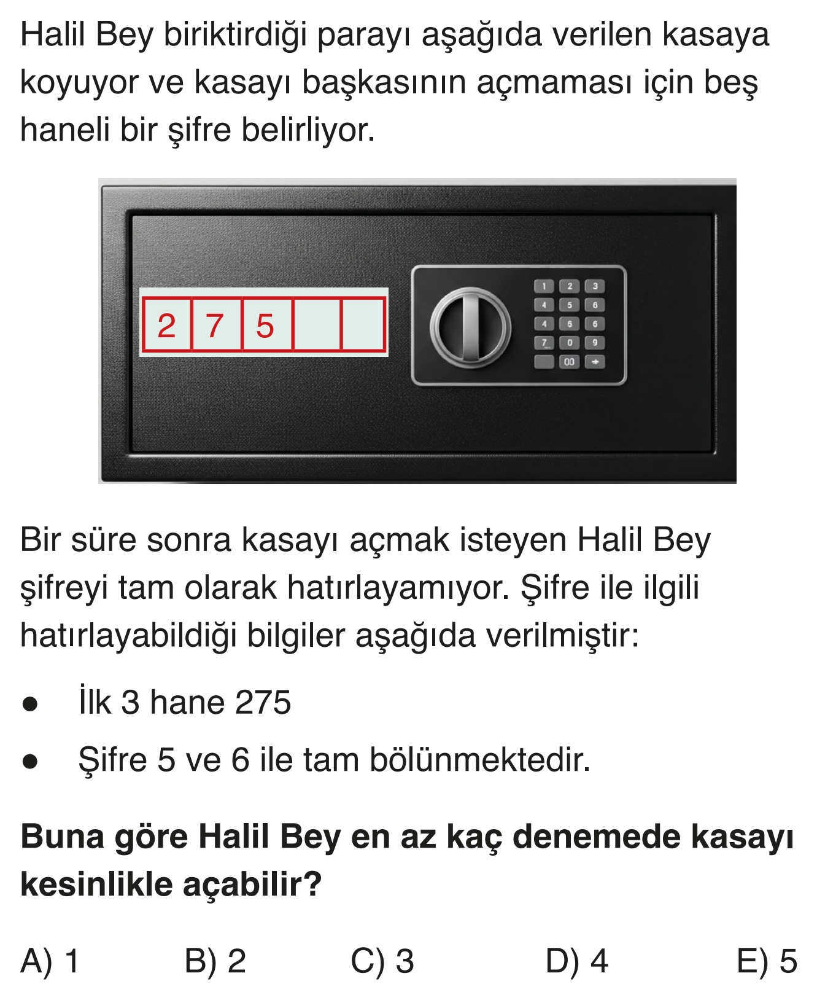
Çözüm
- Şifre $\overline{275xy}$, 5 ve 6 ile → 30 ile bölünür: $y=0$.
- $2+7+5+x$ 3'ün katı → $x\in\{1,4,7\}$.
- 3 olasılık → en geç 3. denemede → C.
Cevap: C
Soru 3Cevap: E
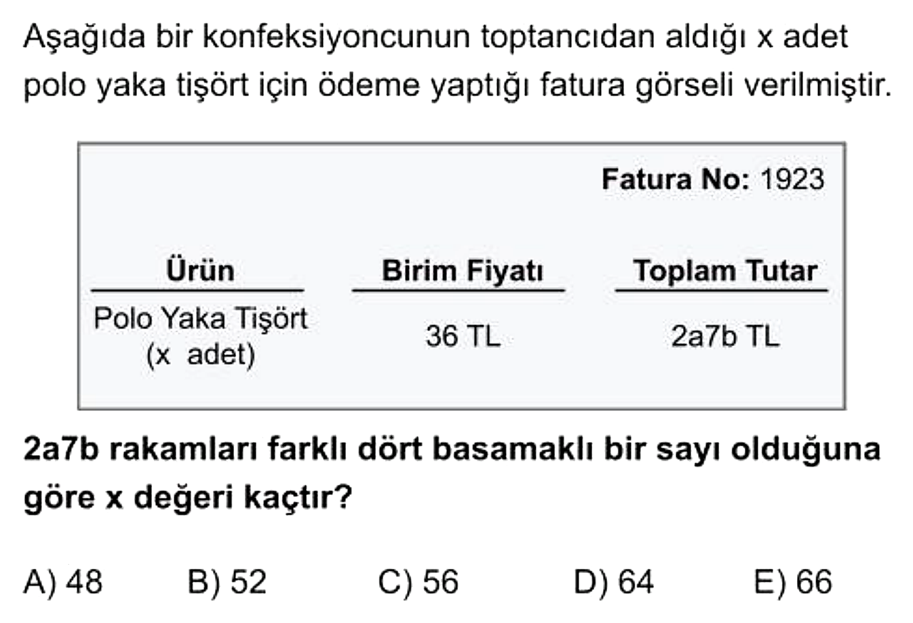
Çözüm
- $36x=\overline{2a7b}$ → 4 ve 9 ile bölünür; 4: $\overline{7b}\in\{72,76\}$.
- 9: $9+a+b$ 9'un katı: $b=2 \Rightarrow a=7$ (rakam tekrarı); $b=6 \Rightarrow a=3$ → $2376$.
- $x=\frac{2376}{36}=66$ → E.
Cevap: E
Soru 4Cevap: B
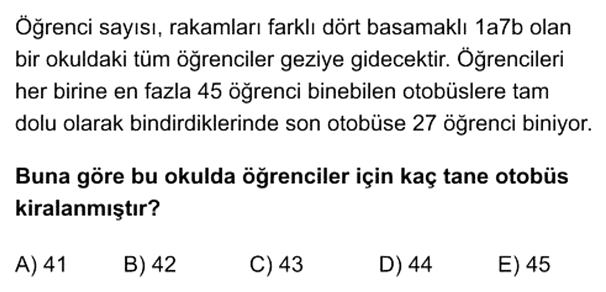
Çözüm
- Son otobüste 27 → öğrenci sayısı 45'e bölününce 27 kalır: 5 ile kalan 2, 9 ile kalan 0.
- $b\in\{2,7\}$; $1+a+7+b$ 9'un katı: $b=2 \Rightarrow a=8$ → $1872$ ($b=7$ rakam tekrarı verir).
- $1872=45\cdot41+27$ → 42 otobüs → B.
Cevap: B
Soru 5Cevap: D
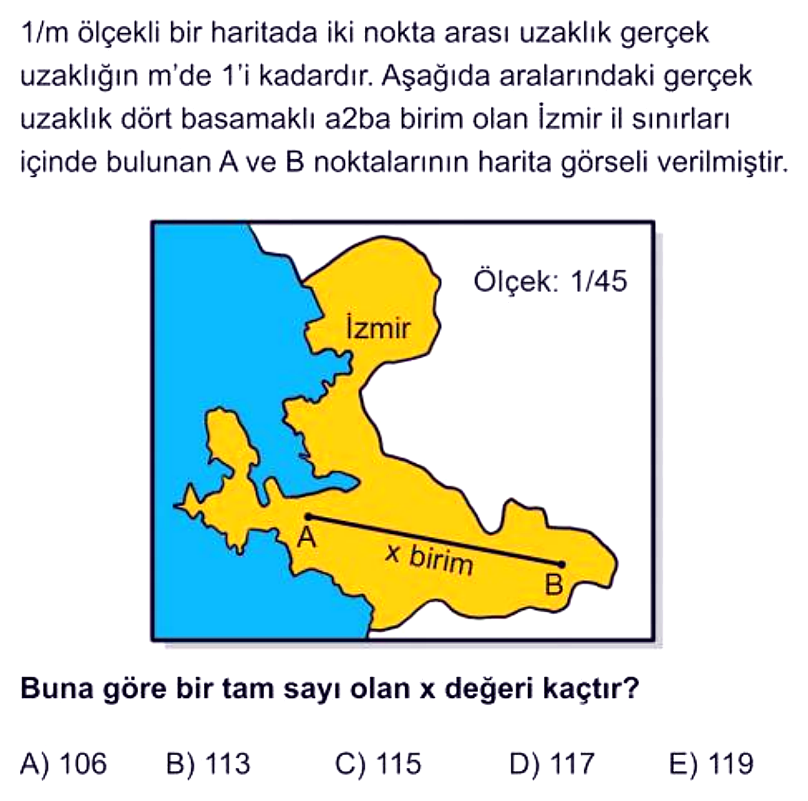
Çözüm
- Gerçek uzaklık $45x=\overline{a2ba}$ → 5 ve 9 ile bölünür; ilk rakam $a\ne0$ → $a=5$.
- $5+2+b+5$ 9'un katı → $b=6$ → $5265$.
- $x=\frac{5265}{45}=117$ → D.
Cevap: D
Soru 6Cevap: A
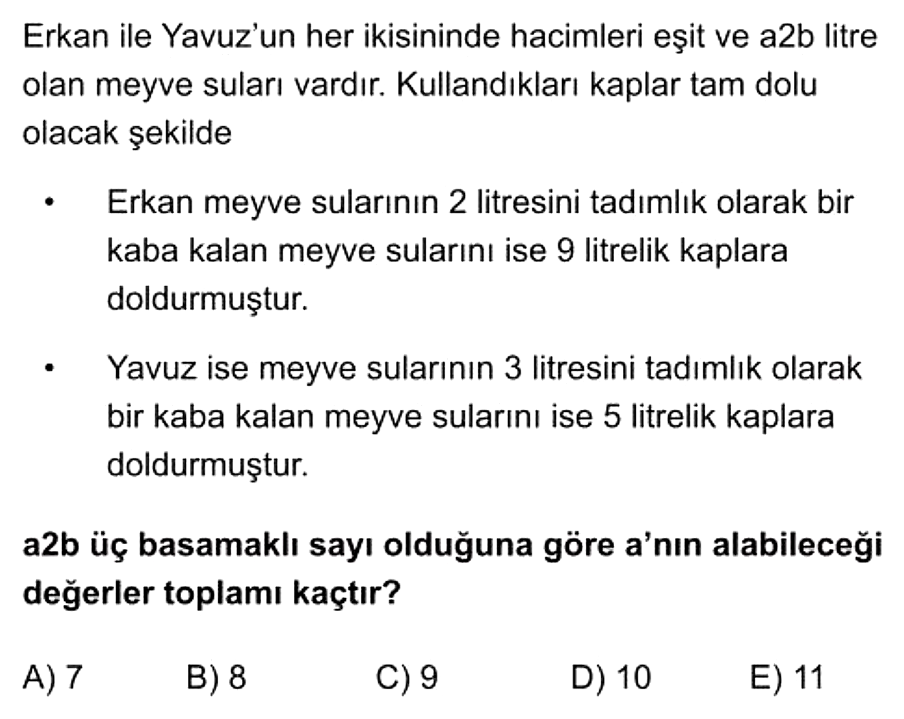
Çözüm
- Erkan: $\overline{a2b}-2$ 9'un katı; Yavuz: $\overline{a2b}-3$ 5'in katı.
- 5 ile kalan 3 → $b\in\{3,8\}$; 9 ile kalan 2 → $a+2+b\equiv2 \Rightarrow a+b\equiv0 \pmod 9$.
- $b=3 \Rightarrow a=6$; $b=8 \Rightarrow a=1$ → $6+1=7$ → A.
Cevap: A
Soru 7Cevap: C
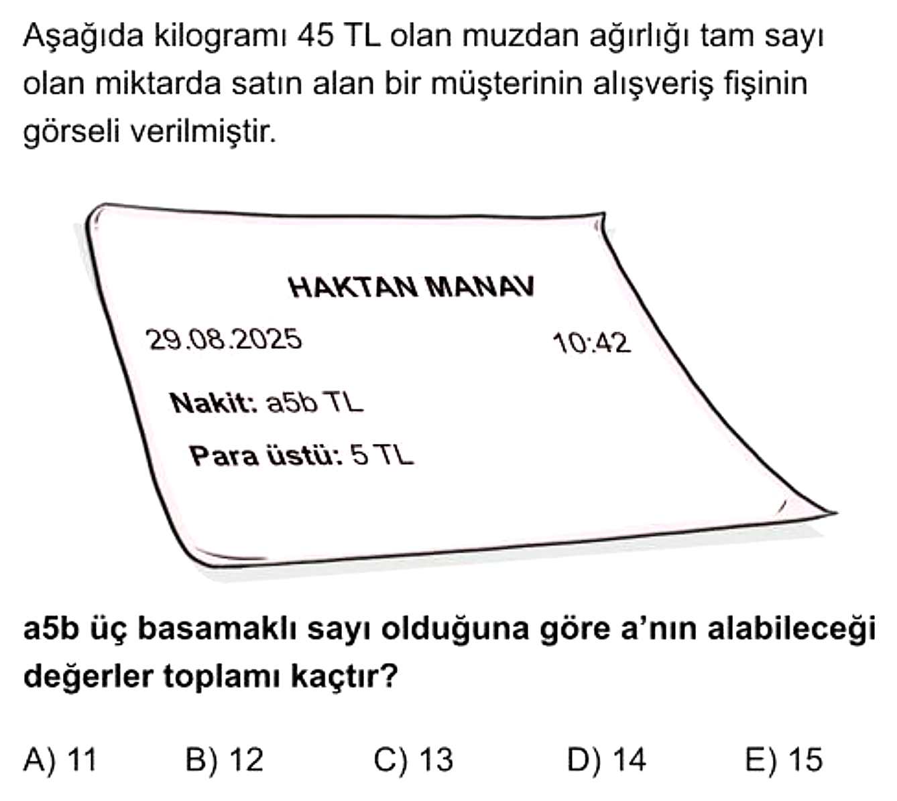
Çözüm
- Ödenen tutar $\overline{a5b}-5$, 45'in katı (kilogram tam sayı).
- $b=5$: $\overline{a50}$ 9 ile → $a=4$; $b=0$: $\overline{a45}$ 9 ile → $a=9$.
- $4+9=13$ → C.
Cevap: C
Soru 8Cevap: D
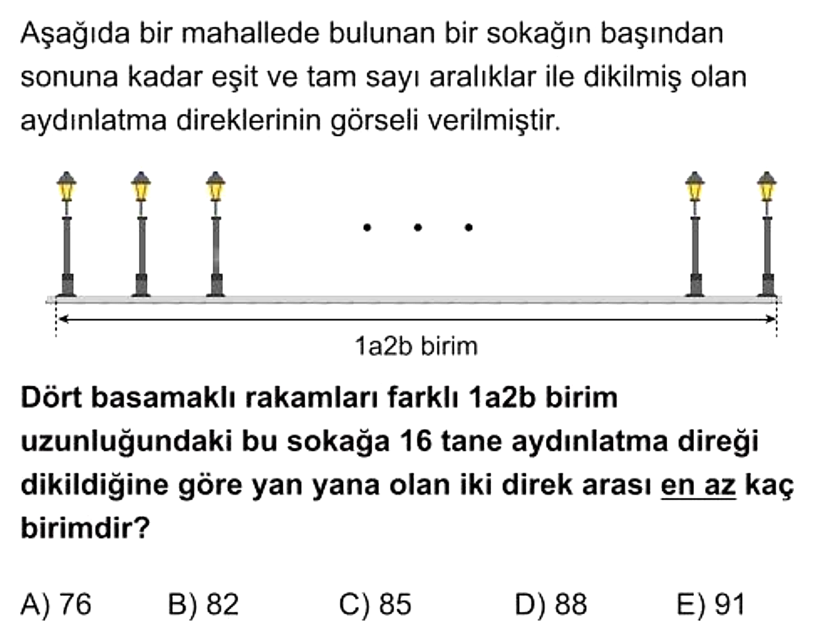
Çözüm
- 16 direk → 15 eşit aralık → $\overline{1a2b}$ 15'e bölünür, rakamlar farklı.
- En küçük uzunluk: $1320$ ($b=0$, $1+a+2$ 3'ün katı, $a=3$).
- Aralık $\frac{1320}{15}=88$ → D.
Cevap: D
Soru 9Cevap: B
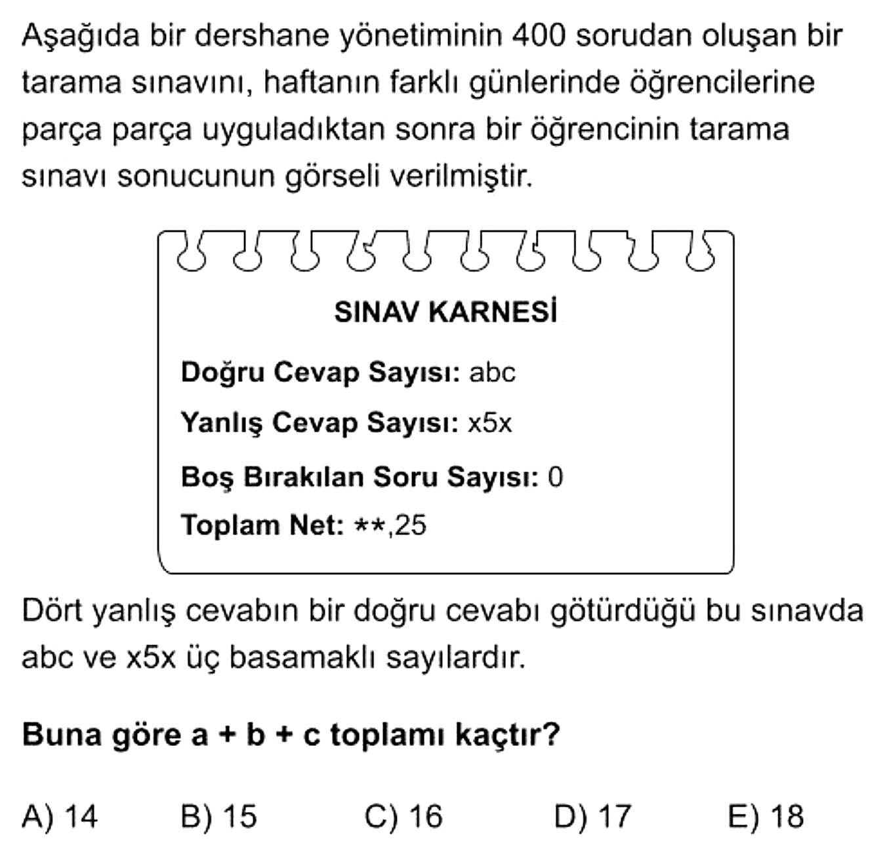
Çözüm
- Boş yok: $\overline{abc}+\overline{x5x}=400$; net $=\overline{abc}-\frac{\overline{x5x}}4$ ondalığı $,25$ değil $,75$ kesirli → $\overline{x5x}\equiv3 \pmod 4$.
- $\overline{5x}\equiv3 \pmod 4 \Rightarrow x\in\{1,5,9\}$; toplam 400'ü aşmaması için $x=1$: $151$ yanlış.
- Doğru $249$ → $2+4+9=15$ → B.
Cevap: B
Soru 10Cevap: A
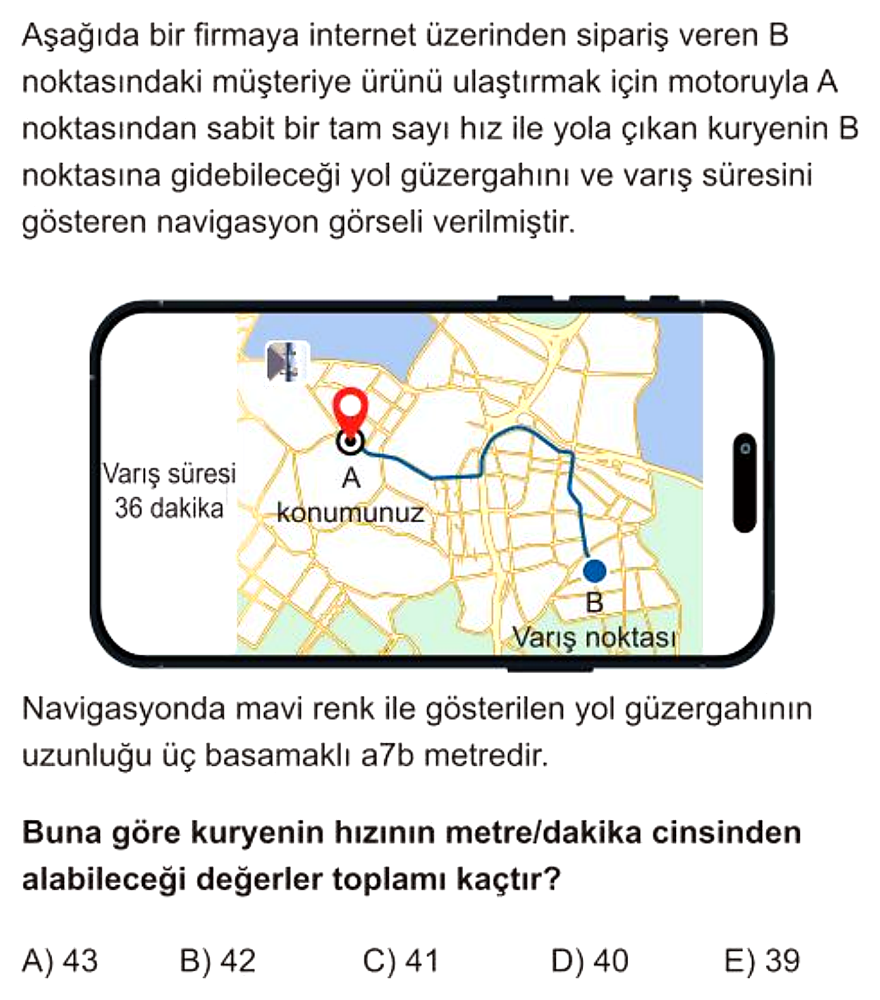
Çözüm
- 36 dakikada $\overline{a7b}$ m, hız tam sayı → $\overline{a7b}$ 36 ile bölünür.
- $b=2 \Rightarrow a=9$: $972$ → $27$; $b=6 \Rightarrow a=5$: $576$ → $16$ m/dk.
- $27+16=43$ → A.
Cevap: A
Soru 11Cevap: E
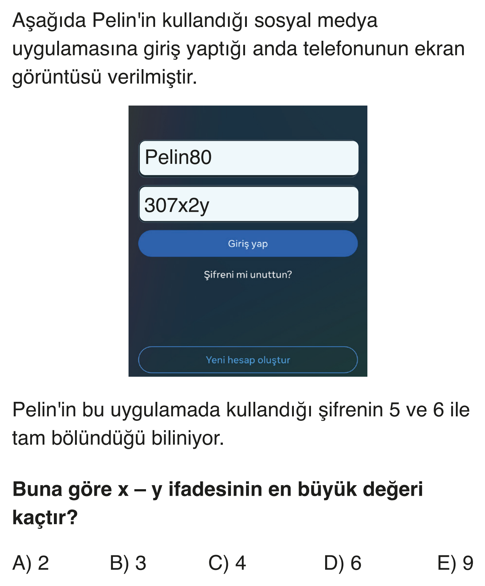
Çözüm
- 5 ve 6 ile bölünür → 30 ile bölünür: $y=0$.
- $3+0+7+x+2+0$ 3'ün katı → $x\in\{0,3,6,9\}$.
- $x-y$ en büyük $9$ → E.
Cevap: E
Soru 12Cevap: B
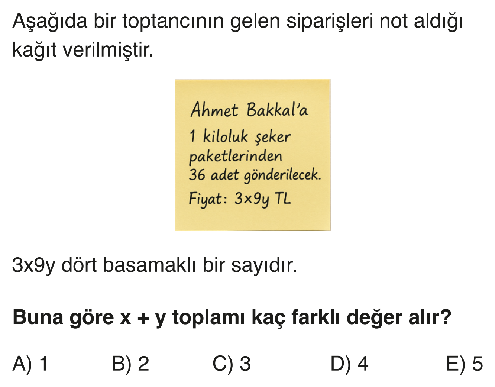
Çözüm
- 36 paket eşit fiyatlı → $\overline{3x9y}$ 36 ile bölünür: $y\in\{2,6\}$.
- $12+x+y$ 9'un katı: $y=2 \Rightarrow x=4$; $y=6 \Rightarrow x\in\{0,9\}$.
- $x+y\in\{6,15\}$ → 2 değer → B.
Cevap: B
Soru 13Cevap: C
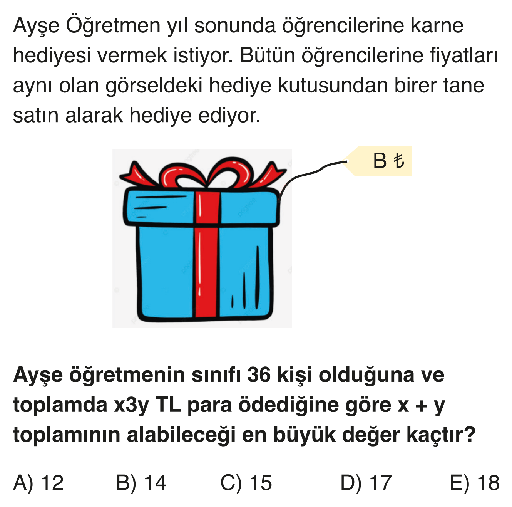
Çözüm
- 36 öğrenciye eşit fiyatlı hediye → $\overline{x3y}$ 36 ile bölünür.
- $y\in\{2,6\}$; $x+3+y$ 9'un katı: $(4,2)$ ya da $(9,6)$.
- En büyük $x+y=15$ → C.
Cevap: C
Soru 14Cevap: E
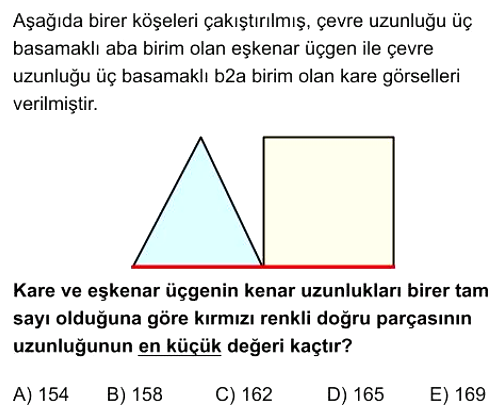
Çözüm
- Üçgenin kenarı $\frac{\overline{aba}}3$, karenin kenarı $\frac{\overline{b2a}}4$; kırmızı doğru parçası ikisinin toplamı.
- $\overline{2a}$ 4'ün katı ve $a\ne0$ → $a\in\{4,8\}$; $2a+b$ 3'ün katı. En küçük: $a=4$, $b=1$: $414$ ve $124$.
- $138+31=169$ → E.
Cevap: E
Soru 15Cevap: E
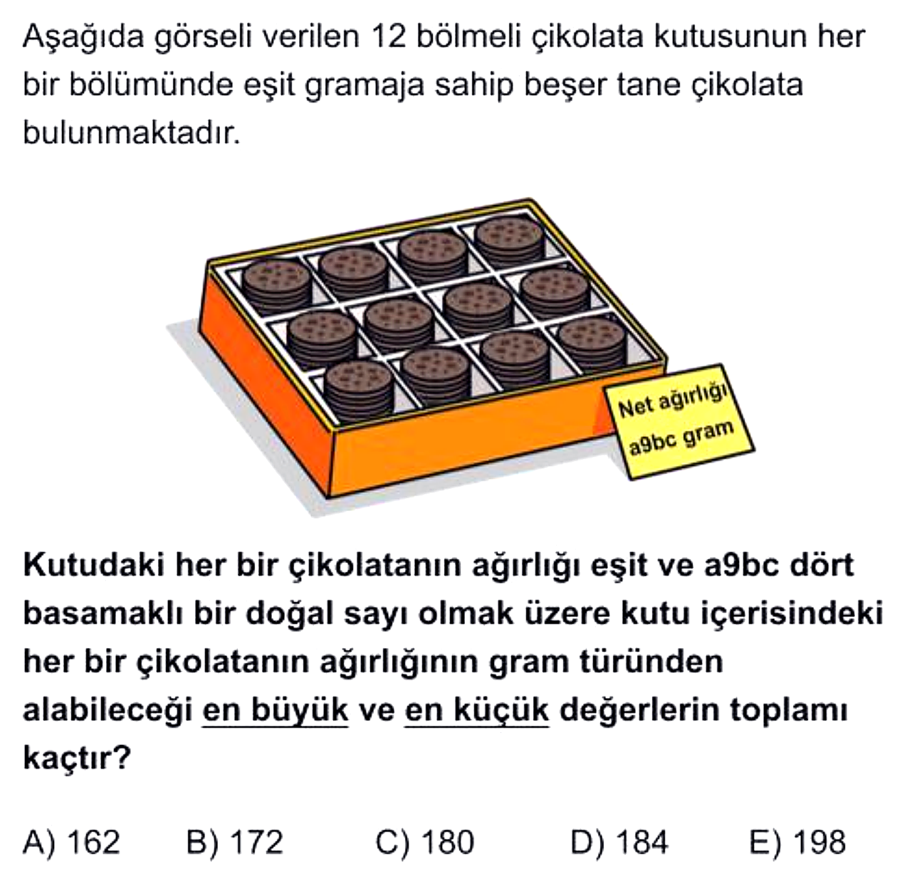
Çözüm
- 12 bölme × 5 çikolata $=60$ çikolata → $\overline{a9bc}$ 60 ile bölünür: $c=0$, $b$ çift, $a+9+b$ 3'ün katı.
- En büyük: $9960$ → $166$ g; en küçük: $1920$ → $32$ g.
- $166+32=198$ → E.
Cevap: E
Soru 16Cevap: D
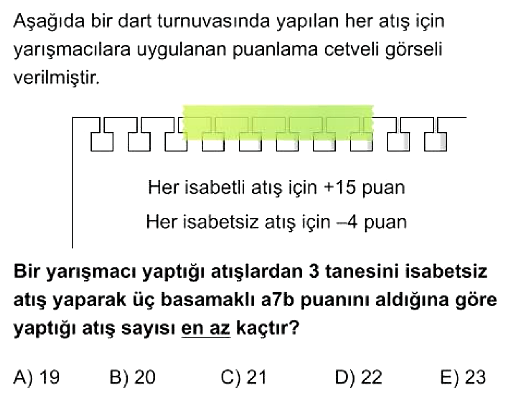
Çözüm
- $h$ isabet, 3 isabetsiz: $15h-12=\overline{a7b}$ → $\overline{a7b}\equiv3 \pmod{15}$.
- 5 ile kalan 3 → $b\in\{3,8\}$; 3 ile kalan 0 → en küçük $273$.
- $15h=285 \Rightarrow h=19$; toplam atış $22$ → D.
Cevap: D
Soru 17Cevap: E
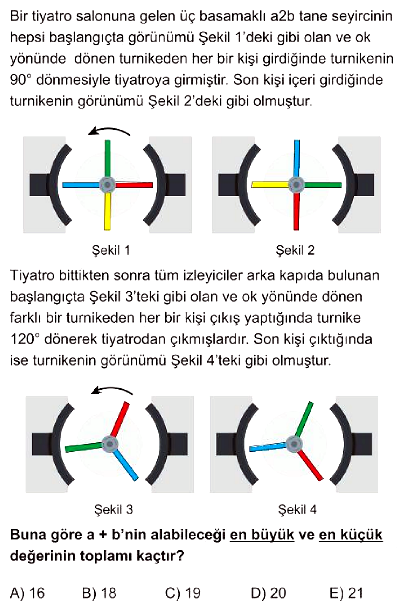
Çözüm
- Girişte turnike her kişide $90^\circ$ döner; Şekil 1'den Şekil 2'ye 3 çeyrek dönüş → $\overline{a2b}\equiv3 \pmod 4$.
- Çıkışta her kişide $120^\circ$; Şekil 3'ten 4'e 2 adım → $\overline{a2b}\equiv2 \pmod 3$.
- $b\in\{3,7\}$ ve $a+b\equiv0 \pmod 3$: en küçük $6$, en büyük $15$ → $21$ → E.
Cevap: E
Soru 18Cevap: B
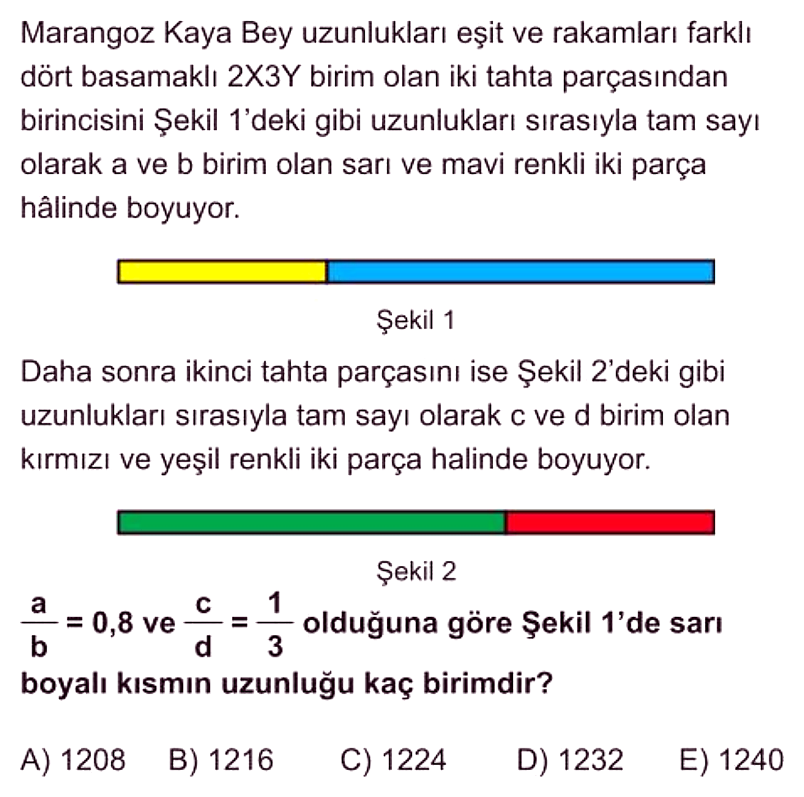
Çözüm
- $\frac ab=\frac45$ → uzunluk 9'un katı; $\frac cd=\frac13$ → 4'ün katı → $\overline{2X3Y}$ 36 ile bölünür.
- $Y\in\{2,6\}$; rakamlar farklı ve toplam 9'un katı → $Y=6$, $X=7$: $2736$.
- Sarı $=\frac49\cdot2736=1216$ → B.
Cevap: B
Soru 19Cevap: A
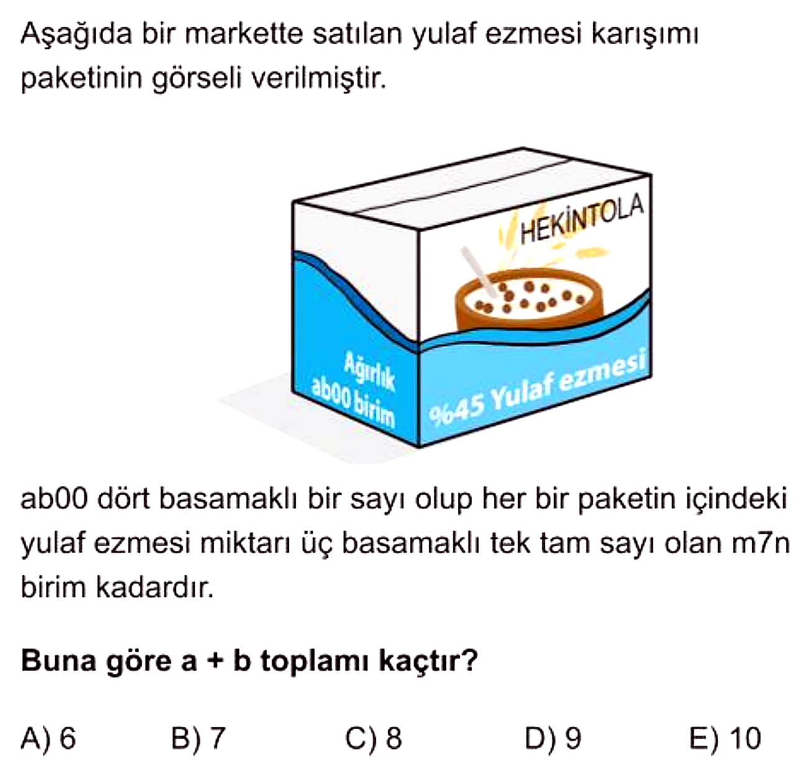
Çözüm
- Paket miktarının %45'i yulaf ezmesi: $0{,}45\cdot\overline{ab00}=45\cdot\overline{ab}=\overline{m7n}$.
- $\overline{m7n}$ üç basamaklı ve tek → $\overline{ab}$ tek ve $\le22$; onlar basamağı 7 olan tek değer $45\cdot15=675$.
- $\overline{ab}=15$ → $a+b=6$ → A.
Cevap: A
Soru 20Cevap: D
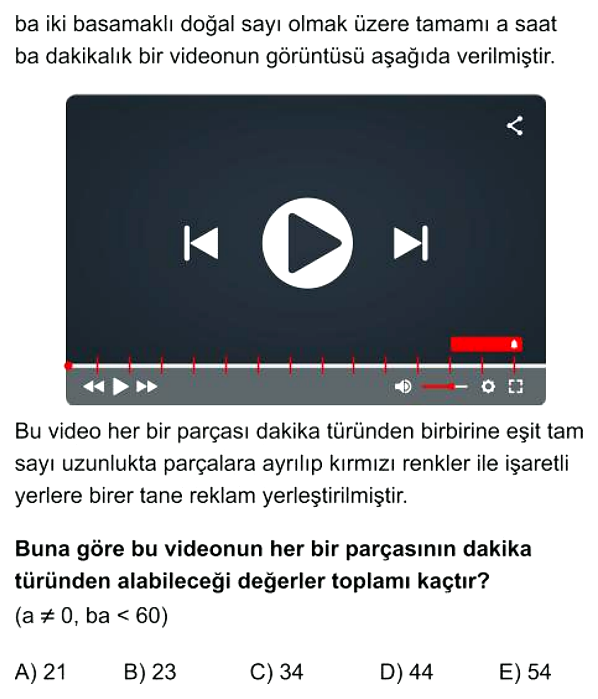
Çözüm
- Süre $60a+\overline{ba}=61a+10b$ dakika ($\overline{ba}<60$ → $b\le5$); zaman çubuğundaki 14 işaret videoyu 15 eşit parçaya böler.
- $61a+10b$ 15'e bölünmeli → 5'e bölünür → $a=5$; $305+10b$ 3'e bölünür → $b\in\{1,4\}$: $315$ ve $345$ dakika.
- Parçalar $21$ ve $23$ dk → $44$ → D.
Cevap: D